The First Bloom
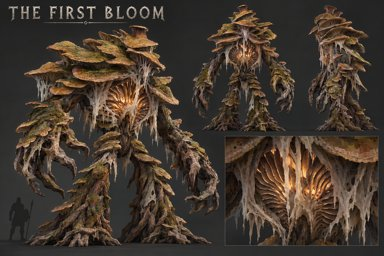
Adopted concept · 3 October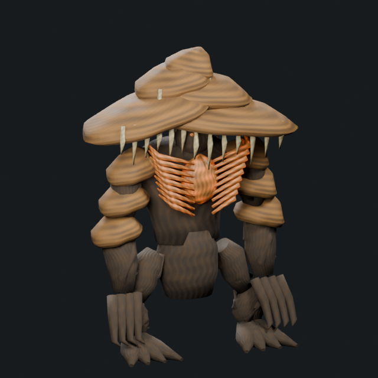
Construction pass 1 · 4.65 m · 12,560 trianglesAsymmetric shelf crown, exposed ribbed gills, living arm cords, root feet and separate talons. Next: reduce cylindrical joins and add finer underside folds.
The Blackwater Maw
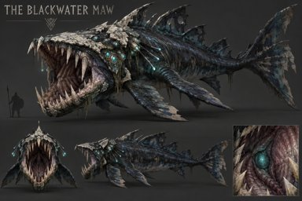
Adopted concept · 3 October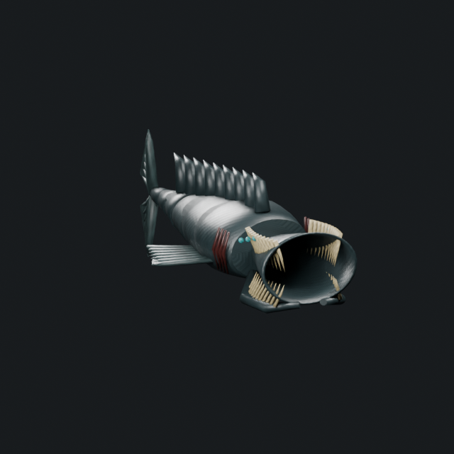
Construction pass 1 · 10 m · 9,236 trianglesThick open jaw vault, modeled trap teeth, inner throat, complete fin webs, sensory organs and a tapered body. Next: wedge-shaped skull and smoother jaw-to-throat joins.
The Furnace Heart
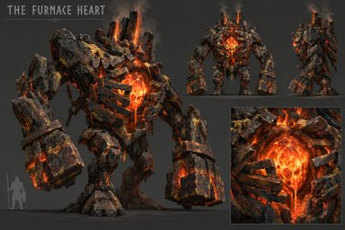
Adopted concept · 3 October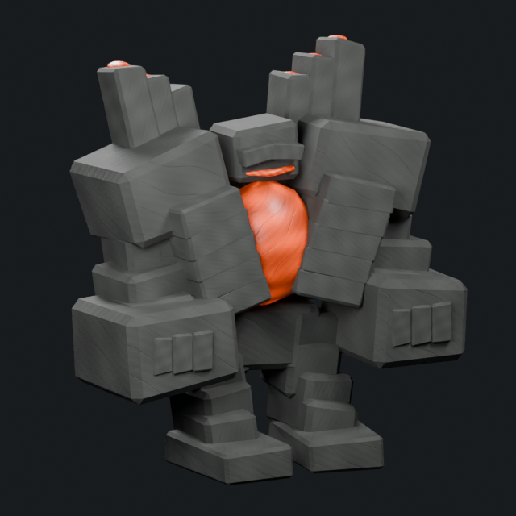
Construction pass 1 · 5.2 m · 3,964 trianglesWide broken masonry boiler cage, exposed molten chamber, heavy impact fists and unequal chimney stacks. Next: fracture larger slabs and vary erosion.
The White Silence
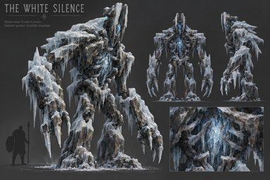
Adopted concept · 3 October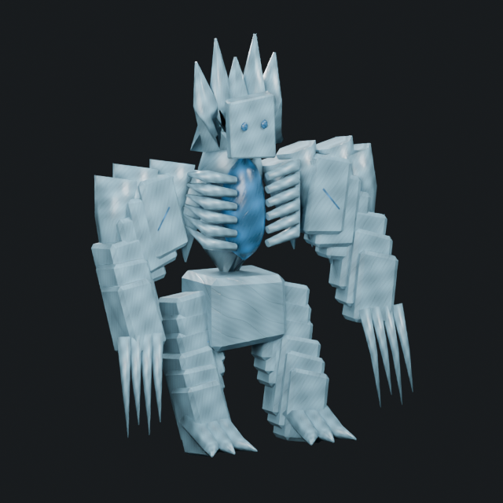
Construction pass 1 · 5.5 m · 3,748 trianglesHollow narrow spine, hanging shard mantle, long ice claws and a cleft vertical crown. Next: replace the provisional face veil and inspect shoulder deformation.
The Rift Titan
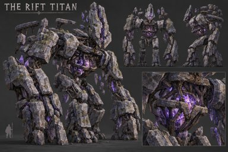
Adopted concept · 3 October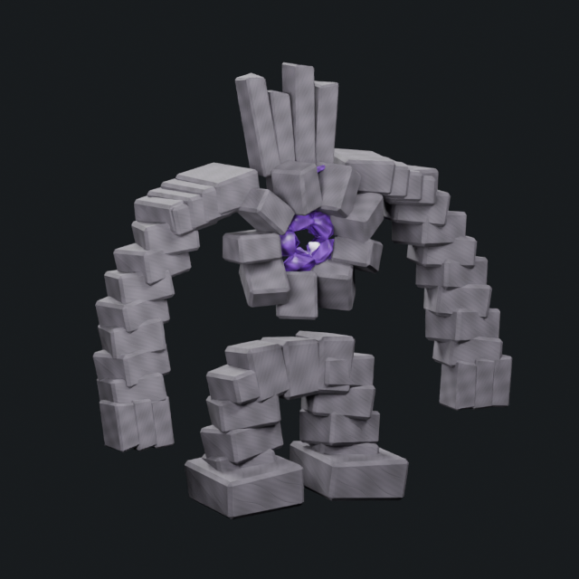
Construction pass 1 · 7 m · 2,932 trianglesSuspended segmented slabs, sparse binding cage and split crown menhirs. Next: introduce larger irregular masses, more pronounced voids and asymmetric shoulder strata.
The Carrion Crown
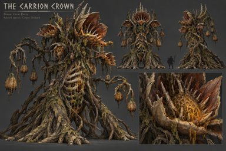
Adopted concept · 3 October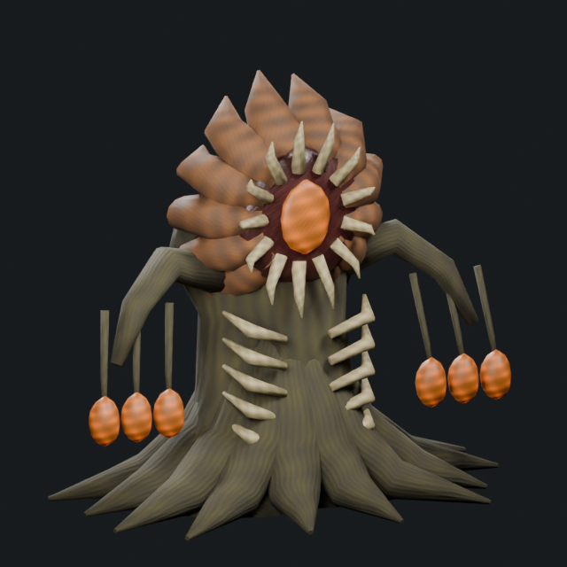
Construction pass 1 · 6.8 m · 6,188 trianglesOne massive rooted trunk, radial bone crown, exposed amber organ, flared roots and hanging seed pods. Next: make the crown less radial and articulate the branching tendrils.